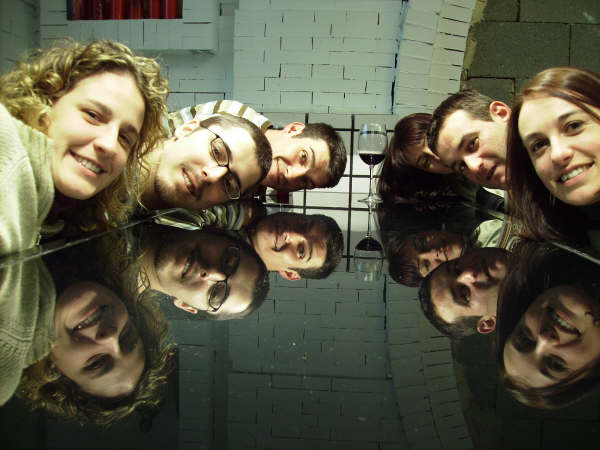

Un sueño..................
Un proyecto..............
Una aventura.............
Quien sabe......; quizás una realidad...............
Enero 2.008

|
European tour 2.008 |
|
|
Un sueño.................. Un proyecto.............. Una aventura............. Quien sabe......; quizás una realidad...............
Enero 2.008 |
|
European tour 2.008 empieza a esbozarse, forjarse o proyectarse!!. Esto puede ser algo de nuestro próximo sueño, aventura.........
 |
Febrero 2.008
 |
 |
Mayo 2.008
- European tour 2.008 ya está en marcha, a falta de la llegada del mes de Agosto, recorreremos en 17 días 8 países: Francia, Alemania, República Checa, Eslovaquia, Hungría, Croacia, Eslovenia e Italia.
Los romanos en sus monturas, Javi (Laguillo) , Rosamari, Joaquín (Quinillo) , Marta, Lore y David (Big750); partiremos con la ilusión y el espíritu de aventura que nos caracteriza por tierras nuevas, intentando descubrir nuevos parajes y excitantes emociones. Sólo el tiempo nos separa de nuestra aventura..............
Julio 2.008
|
|
Agosto 2.008
Allá vamos!!!:
| - Sección 3ª: Praga (SK) - Kety (PL) - Budapest (H). | |
| - Sección 4: Budapest (H) - Zagreb (HR) - Eslovenia (SL) - Venecia (I). | |
| - Sección 5: Venecia (I) - Genova (I) - Eje Pirenaico (E) - Cantabria (E). |